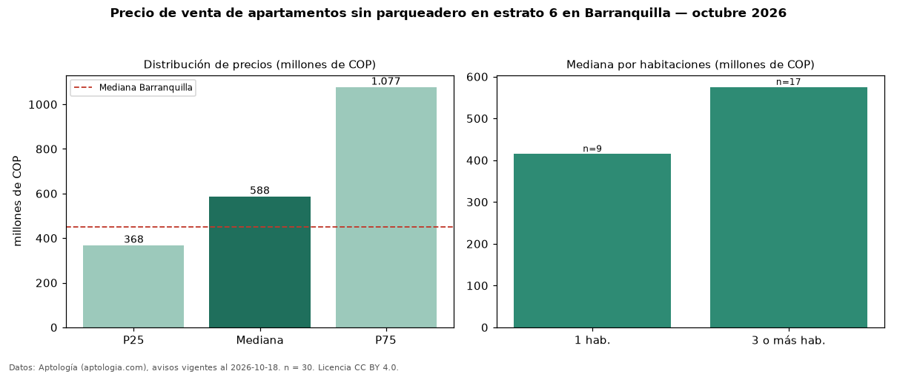

Precio de venta de apartamentos sin parqueadero en estrato 6 en Barranquilla — octubre 2026
COP 588 millones es el precio mediano de apartamentos sin parqueadero en estrato 6 en venta en Barranquilla (n = 30 avisos). Frente a la mediana de los apartamentos en estrato 6 en venta de Barranquilla (COP 795 millones, n = 2.201), queda 26 % por debajo; este segmento reúne el 1 % de esos avisos. La mitad central de los avisos va de COP 368 millones a COP 1,08 mil millones (razón 2,9), una dispersión alta. El área mediana anunciada es 102 m². El segmento con más oferta es el de 3 o más habitaciones (17 avisos, mediana COP 575 millones); pasar de 1 habitación a 3 o más habitaciones cambia la mediana +39 %. La mediana de todos los apartamentos en venta de Barranquilla es COP 450 millones (+31 % de diferencia). Datos: Aptología (aptologia.com), CC BY 4.0 — https://www.aptologia.com/venta/barranquilla. Archivos: PDF, CSV con las cifras y gráfica PNG.

| Avisos únicos | 30 |
|---|---|
| Percentil 25 | COP 368.500.000 |
| Mediana | COP 587.500.000 |
| Percentil 75 | COP 1.077.283.250 |
Fuente: avisos vigentes de portales inmobiliarios recopilados por Aptología, deduplicados (mínimo 30 avisos únicos por celda). Precios pedidos, no cerrados. Fecha: 2026-10-18.